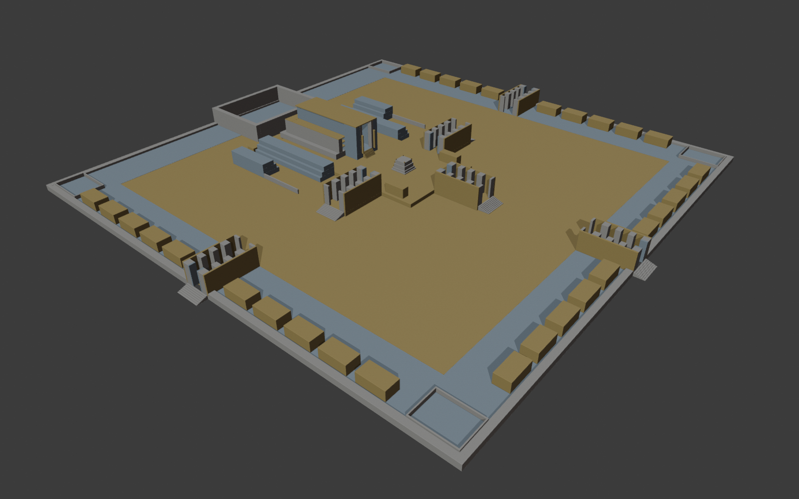

Le prophète voit un homme mesurer un temple au roseau, porte par porte et mur par mur. Ce projet reprend chaque cote du texte, en coudées, pour en tirer 18 planches de croquis et un premier modèle 3D dans Blender. Ce qui vient du texte, ce qui en est déduit et ce qui est supposé est distingué partout.

Format A3 paysage, cotes en coudées longues, échelle et légende dans le cartouche. Cliquer sur une planche pour l'ouvrir en grand.
| Question | Retenu |
|---|---|
| Enceinte (42:16-20) | 500 coudées (Septante) ; l'hébreu dit « roseaux » |
| Vestibule du temple (40:49) | 12 coudées (Septante) |
| Largeur des portes (40:13) | 6 + 13 + 6 = 25 |
| Hauteurs | Supposées : étages 5, portes 20, nef 30, marches ½ |
| Portion sacrée (45 ; 48) | 25 000 coudées au carré : Lévites, prêtres, ville |